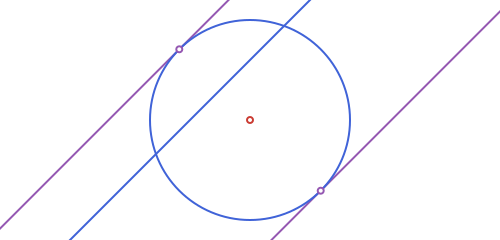

Circles
APCircle2 is a center and a radius, c.center and c.r. Some of what follows is a method on a circle (area, rotate, ...); the rest (tangency, power of a point, radical axes, inversion) is a function of one or more circles.
A point on the circumference works instead of the radius, when that's the more natural thing on hand: APCircle2(center, through) is exactly APCircle2(center, distance(center, through)):
using Apollonius
APCircle2(APPoint(0.0, 0.0), APPoint(3.0, 4.0)) # radius 5, same as APCircle2(APPoint(0.0, 0.0), 5.0)APCircle2([0.0, 0.0], 5.0)
Three points on the circumference work too: APCircle2(p1, p2, p3) is their circumcircle, computed directly (the same formula circumcenter uses on an APTriangle, without needing to build one first):
APCircle2(APPoint(0.0, 0.0), APPoint(4.0, 0.0), APPoint(0.0, 3.0))APCircle2([2.0, 1.5], 2.5)
It throws an ArgumentError if the three points are (or are too close to) collinear, same as affine_map does for its three source points. There's no finite circle through them in that case.
Power of a point and tangent lines
The power_of_point of p with respect to a circle c is distance(p, c.center)^2 - c.r^2: negative inside the circle, zero on it, positive outside. Its square root, when p is outside, is exactly the length of a tangent segment from p to the circle. That's tangent_length. tangent_points and tangent_lines give the two actual points/lines of tangency.
using Apollonius
c = APCircle2(APPoint(0.0, 0.0), 5.0)
p = APPoint(13.0, 0.0)
power_of_point(p, c) # 144.0 = 13² - 5²
tangent_length(c, p) # 12.0 = sqrt(144)
pts = tangent_points(c, p)2-element Vector{APPoint{2, Float64}}:
[1.9230769230769234, 4.615384615384615]
[1.9230769230769234, -4.615384615384615]
This is the classic tangent from an external point construction: pts[1] and pts[2] are the two points where a line through p just touches the circle, and power_of_point(p, c) is nothing but the square of that tangent length either way.
Radical axis, radical center and radical circle
Two circles that don't share a center have a radical axis: the locus of points whose power is equal with respect to both. radical_axis always exists (even for circles that don't meet) and is perpendicular to the line joining their centers. "Don't share a center" is checked with a scale-aware tolerance (atol, like elsewhere in the package), not bare equality: two circles can be mathematically concentric yet have centers that only agree up to floating-point roundoff (this comes up for, e.g., orthic_axis of an equilateral triangle, whose circumcircle and nine-point circle are concentric), and a bare == would miss that and return a wildly wrong axis instead of throwing. Three circles have three pairwise radical axes, and those three lines always meet at a single point, the radical_center; radical_circle is centered there, orthogonal to all three (only defined when that common power is non-negative).
c1 = APCircle2(APPoint(0.0, 0.0), 3.0)
c2 = APCircle2(APPoint(8.0, 0.0), 2.0)
c3 = APCircle2(APPoint(3.0, 6.0), 4.0)
ra = radical_axis(c1, c2)
rc = radical_center(c1, c2, c3)
rcirc = radical_circle(c1, c2, c3)APCircle2([4.3125, 1.010416666666666], 3.258619046510005)
Inversion, polar lines and poles
Inversion in a circle c sends a point p to the point on ray c.center → p at distance k²/distance(p, c.center) from the center (k = c.r by default): points outside c go inside and vice versa, and points on c are fixed. inversion does this for a point; invert has methods for an APLine (which usually inverts to an APCircle2 through the center), an APCircle2 (which inverts to another APCircle2, or an APLine if it passes through the inversion center), an APSegment (see below), an APTriangle, and an APStraightNgon.
inversion(APPoint(10.0, 0.0), c) # (2.5, 0.0): 5²/10 = 2.5[2.5, 0.0]inversion_neg and invert_neg give the negative-ratio inversion instead: the same image, point-reflected through the inversion circle's own center (i.e. on ray p -> O rather than O -> p):
inversion_neg(APPoint(10.0, 0.0), c) # (-2.5, 0.0): the mirror image of the positive one[-2.5, 0.0]invert/invert_neg also take just center (and, as a keyword, k) to build a reusable one-argument function, the same convenience rotate/homothety/etc. have (see Affine Maps), except this returns a plain closure rather than an APAffineMap, since circle inversion isn't an affine transformation at all:
inv5 = invert(APPoint(0.0, 0.0); k=5.0) # p -> invert(p, APPoint(0.0,0.0); k=5.0)
inv5(APLine(APPoint(2.0, 0.0), APPoint(2.0, 1.0))) isa APCircle2
map(inv5, [APLine(APPoint(2.0, 0.0), APPoint(2.0, 1.0)), APLine(APPoint(-3.0, 0.0), APPoint(-3.0, 1.0))])2-element Vector{APCircle2{Float64}}:
APCircle2([6.25, 0.0], 6.25)
APCircle2([-4.166666666666666, 0.0], 4.166666666666666)
Inverting a segment, triangle or polygon
A straight side doesn't generally stay straight under inversion: it only does when the line it lies on passes through the inversion center (then it inverts to another APSegment, on that same line); otherwise it inverts to an arc of the circle its line inverts to: specifically the arc that does not pass through the center, since that point is the image of the line's own point at infinity, which a finite segment never reaches. invert(::APSegment, ::APPoint) returns whichever of the two applies, as a Union{APSegment,APCircularArc2}:
invert(APSegment(APPoint(1.0, 0.5), APPoint(2.0, 1.0)), APPoint(0.0, 0.0)) # an APCircularArc2
invert(APSegment(APPoint(0.5, -1.5), APPoint(1.5, -1.0)), APPoint(0.0, 0.0)) # an APSegment: this line passes through (0,0)APCircularArc2(APCircle2([0.14285714285714288, -0.28571428571428575], 0.31943828249997), [0.2, -0.6000000000000001] -> [0.4615384615384617, -0.3076923076923077])
Since an APTriangle's or APStraightNgon's sides invert independently like this, their image is generally a mix of straight and curved sides, not representable as another APTriangle/APStraightNgon. invert(::APTriangle, ::APPoint) and invert(::APStraightNgon, ::APPoint) return an APCurvilinearNgon2 instead: a closed region bounded by any mix of APSegment and APCircularArc2 sides, each inverted independently and reconnected in order.
t2 = APTriangle(APPoint(1.5, 1.5), APPoint(3.0, 0.5), APPoint(1.0, -1.0))
cp = invert(t2, APPoint(0.0, 0.0))
area(cp), perimeter(cp)(0.24121868667238588, 2.312061059558156)
In the first example, none of the triangle's sides passes through the inversion center, so all three become circular arcs. If one side does lie on a line through the center, that side stays straight; the other two still become arcs.

Same rule for any straight-sided polygon: each side inverts on its own, straight if its line passes through the center, an arc otherwise, so the result can freely mix both.

area/perimeter are the same generic, sides-based APPolygon formulas every closed shape in the package shares (a straight side's own contribution reduces to the standard shoelace-formula edge term); rotate, reflection and homothety all work on an APCurvilinearNgon2 too, transforming each side independently.
polar_line and pole are the projective dual of this: the polar of p with respect to c is the line through the two tangent points from p (when p is outside c), and pole is its inverse, recovering p from that line.
pl = polar_line(c, p) # the line through pts[1] and pts[2] above
pole(c, pl) # back to p = (13.0, 0.0)[13.0, 0.0]Similitude centers and common tangents
Two circles have two centers of similitude: the external_similitude_center (where their external common tangents meet) and the internal_similitude_center (where the internal ones, the ones that cross between the circles, meet). external_tangent_lines and internal_tangent_lines return those tangent lines directly, each as APLine(p1, p2) with p1/p2 the actual points of tangency on c1/c2 respectively (not the similitude center, even though every one of these lines does pass through it):
external_similitude_center(c1, c2) # (24.0, 0.0)
internal_similitude_center(c1, c2) # (4.8, 0.0)
ext = external_tangent_lines(c1, c2)
int = internal_tangent_lines(c1, c2)
distance(ext[1].p1, c1.center), distance(ext[1].p2, c2.center) # (c1.r, c2.r)(2.9999999999999996, 1.9999999999999996)
The external center is far from both circles here because c1 and c2 have fairly close radii. The closer two radii are, the further out the external center sits, reaching infinity (parallel tangents) when the radii are exactly equal (in which case external_similitude_center throws, since there is no finite point to return).
These similitude centers are also exactly the points used by the Apollonius/tangent-circle constructions (see Tangency & Apollonius Problems), since a circle tangent to two given circles is related to them by a homothety centered at one of these two points.
tangent_parallel gives the two tangent lines to a circle parallel to a given line: the tangents at the two ends of the diameter perpendicular to it. In each returned line, the first point is the point of tangency:
t1, t2 = tangent_parallel(c, APLine(APPoint(0.0, 3.0), APPoint(1.0, 4.0)))(APLine([3.5355339059327373, -3.5355339059327373] -> [7.071067811865475, 0.0]), APLine([-3.5355339059327373, 3.5355339059327373] -> [-7.071067811865475, 0.0]))
How two circles (or a line and a circle) relate
circles_position and line_circle_position classify the relationship between two circles, or a line and a circle, as a Symbol rather than a single boolean, useful when you need to distinguish, say, "tangent" from "disjoint" from "one contains the other" in one call instead of chaining several predicates:
circles_position(APCircle2(APPoint(0.0, 0.0), 5.0), APCircle2(APPoint(2.0, 0.0), 3.0)) # :tangent_int
line_circle_position(APLine(APPoint(0.0, 5.0), APPoint(1.0, 5.0)), APCircle2(APPoint(0.0, 0.0), 5.0)) # :tangent:tangentcircles_position returns one of :identical, :concentric, :disjoint_ext, :tangent_ext, :secant, :tangent_int or :disjoint_int; line_circle_position returns one of :disjoint, :tangent or :secant.
Circular arcs
APCircularArc2 is the arc of a circle between two of its points, traversed counterclockwise from the first to the second. Fixing the direction like this is what makes the two points unambiguous, since otherwise there'd be two different arcs (the short way and the long way around) that a bare pair of points couldn't tell apart.
p1, p2 = APPoint(8.0, 0.0), APPoint(0.0, 2.0)
arc = APCircularArc2(c, p1, p2)
measure(arc) # π/2: the swept angle, counterclockwise from p1 to p2
arc_length(arc) # c.r * measure(arc)7.853981633974483point_on_arc(arc, 0.0) ≈ p1 # t=0 is p1, t=1 is p2
midpoint(arc) # point_on_arc(arc, 0.5)[3.5355339059327378, 3.5355339059327373]
Swapping p1 and p2 gives the complementary arc (the other 3/4 of this circle here), not the same arc traversed backwards. APCircularArc2 only ever sweeps counterclockwise, so which points is p1 and which is p2 is exactly what picks one of the two candidate arcs. reverse does exactly that swap:
reverse(arc) == APCircularArc2(c, p2, p1), measure(reverse(arc)) ≈ 2pi - measure(arc)(true, true)This is the fix for a common gotcha: if arc gets built from points that already live in a mirrored coordinate space (e.g. after @to_luxor_picture's default flip=true, see Drawing with Luxor.jl), the "counterclockwise" sweep comes out backwards, since it's computed straight from the (x, y) values with no idea they're mirrored; reverse corrects that after the fact (building the arc before the flip and letting the whole object pass through @to_luxor_picture handles it automatically instead, the same as for APAngle2).
Ellipses have the exact same arc type, APEllipticArc2, and the exact same convention (reverse included); see Conics: Ellipse, Parabola & Hyperbola.
APCircularArc2 is also what interstices (see Tangency & Apollonius Problems) builds a curvilinear triangle's three sides out of.
Circular sectors, segments and annuli
An arc alone is just a curve; closing it up gives a genuine region: a finite-area APPolygon whose sides mix straight segments with the arc itself. APCircularSector2, APCircularSegment2 and APAnnularSector2 are the three classical ways to do this (APCircularSector2(circle, p1, p2) is shorthand for APCircularSector2(APCircularArc2(circle, p1, p2)), and likewise for the other two):
APCircularSector2, the "pie slice": bounded by the two radiicircle.center -> p1,circle.center -> p2, and the arc between them.APCircularSegment2, the "cap": bounded by the arc and the straight chord[p1, p2]instead of the two radii.APAnnularSector2, the "ring slice": the region betweenarcand the corresponding arc of a smaller, concentric circle (r_inner), closed off by the two radial segments between them. This is Luxor's ownsector(center, innerradius, outerradius, ...)shape, represented here as a realAPPolygon.
sec = APCircularSector2(arc)
area(sec) # r² * measure(arc) / 2
perimeter(sec) # the two radii (2r) plus the arc length17.853981633974485seg = APCircularSegment2(arc)
area(seg) # r² * (measure(arc) - sin(measure(arc))) / 2
perimeter(seg) # the arc length plus the chord [p1, p2]14.925049445839958asec = APAnnularSector2(arc, 2.0) # inner radius 2.0
area(asec) # outer sector area minus inner sector area16.493361431346415
None of these three formulas is hand-derived per type. Every one comes for free from the generic, sides-based area/perimeter every APPolygon shares (see APPolygon's own docstring), and none needs to special-case whether arc sweeps less or more than half the circle (a "minor" vs "major" arc), since measure(arc) is already the specific directed angle for this arc.
Both APCircularSector2 and APCircularSegment2 have a Base.in matching their shape: inside the circle and on the correct side (angularly, for a sector; of the chord, for a segment):
c.center in sec, c.center in seg # the center is in the sector, but not this segment(true, false)Transforming arcs, sectors and segments
rotate, reflection and homothety all work on an APCircularArc2 (and, by delegating to it, on an APCircularSector2/APCircularSegment2/APAnnularSector2 too). rotate and homothety never reverse orientation (even homothety with a negative ratio, a point reflection through the center, is really just a 180° rotation), so p1/p2 transform pointwise with no surprises:
rotate(arc, 2pi / 3)
homothety(arc, -2.0) # negative k: still no swap neededAPCircularArc2(APCircle2([0.0, 0.0], 10.0), [-10.0, 0.0] -> [0.0, -10.0])
Reflecting about an APPoint is likewise a point reflection: no swap. Reflecting about an APLine, however, is a true mirror: it does reverse orientation, so reflection(::APCircularArc2, ::APLine) also swaps p1 and p2 internally, keeping the result's own p1 -> p2 sweep counterclockwise like every other APCircularArc2:
reflection(arc, APPoint(1.0, 1.0)) # point reflection: p1/p2 not swapped
reflection(arc, APLine(APPoint(0.0, 0.0), APPoint(1.0, 1.0))) # line reflection: p1/p2 swappedAPCircularArc2(APCircle2([0.0, 0.0], 5.0), [5.0, 0.0] -> [0.0, 5.0])
Without that swap, the reflected endpoints alone would trace out the arc's complementary 3/4-of-the-circle instead of its true mirror image.
The gap between three mutually tangent circles
Three circles that are pairwise tangent (each coin-touching-coin, or one containing the other two) leave a curvilinear-triangle gap between them. interstices finds it (or, when one circle encloses the other two, both gaps, one on each side):
u1 = APCircle2(APPoint(0.0, 0.0), 1.0)
u2 = APCircle2(APPoint(2.0, 0.0), 1.0)
u3 = APCircle2(APPoint(1.0, sqrt(3)), 1.0)
gap = only(interstices(u1, u2, u3))
area(gap), perimeter(gap)(0.16125448077398086, 3.141592653589793)
The result is an APInterstice2: a specific 3-arc APPolygon built by finding the circle(s) tangent to all three (the classical CCC Apollonius problem, see Tangency & Apollonius Problems) and picking out the facing arc on each of u1/u2/u3.
gap isa APInterstice2trueGeneral curvilinear polygons
APCurvilinearTriangle2, APCurvilinearQuadrilateral2 and APCurvilinearNgon2 generalize APInterstice2 beyond "3 arcs from mutually tangent circles": each is a closed region bounded by any mix of straight (APSegment) and curved (APCircularArc2, APEllipticArc2, APParabolicArc2, APHyperbolicArc2) sides, built directly from those sides rather than derived from circles:
| Type | Number of sides |
|---|---|
APCurvilinearTriangle2 | 3 |
APCurvilinearQuadrilateral2 | 4 |
APCurvilinearNgon2 | any number ≥ 3, given as a vector |
circ = APCircle2(APPoint(0.0, 0.0), 3.0)
arc = APCircularArc2(circ, APPoint(0.0, 3.0), APPoint(-3.0, 0.0))
rad1 = APSegment(APPoint(0.0, 3.0), APPoint(0.0, 0.0))
rad2 = APSegment(APPoint(0.0, 0.0), APPoint(-3.0, 0.0))
ct = APCurvilinearTriangle2(rad1, arc, rad2) # one curved side, two straight
area(ct), perimeter(ct)(7.0685834705770345, 10.71238898038469)
This is exactly what APCircularSector2 computes for the same three sides. Building it directly like this is only necessary when the sides don't come from a common circle/ellipse/etc. in the first place (e.g. after inverting or affine-mapping a region whose sides were originally circular, see Affine Maps and Inversion, polar lines and poles):
eq = APEllipse2(APPoint(6.0, 0.0), 2.0, 1.0, 0.0)
earc = APEllipticArc2(eq, APPoint(8.0, 0.0), APPoint(6.0, 1.0))
s1 = APSegment(APPoint(0.0, 3.0), APPoint(6.0, 1.0))
s2 = APSegment(APPoint(-3.0, 0.0), earc.p1)
cq = APCurvilinearQuadrilateral2(earc, s1, arc, s2)
area(cq) > 0 # a genuine 4-sided mixed straight/circular/elliptic regiontrue
APCurvilinearNgon2(sides) is the same idea for any number of sides ≥ 3, given as a plain vector instead of one positional argument per side, useful when the side count isn't fixed ahead of time:
cn = APCurvilinearNgon2([rad1, arc, rad2]) # the same 3 sides as ct above
area(cn) ≈ area(ct), perimeter(cn) ≈ perimeter(ct) # same sides, same region either way(true, true)rotate, reflection, homothety and translate all transform every side independently and reassemble the result, the same generic, sides-based machinery every APPolygon shares (see APCurvilinearNgon2's own worked example above, via invert, for the n-sided case built from an arbitrary vector of sides).